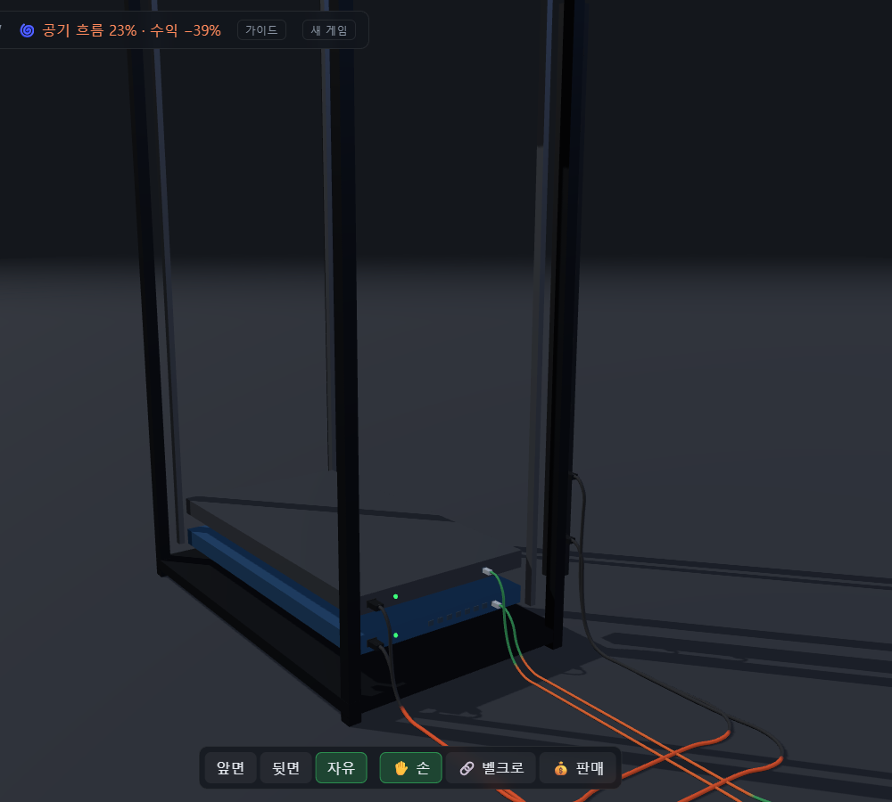
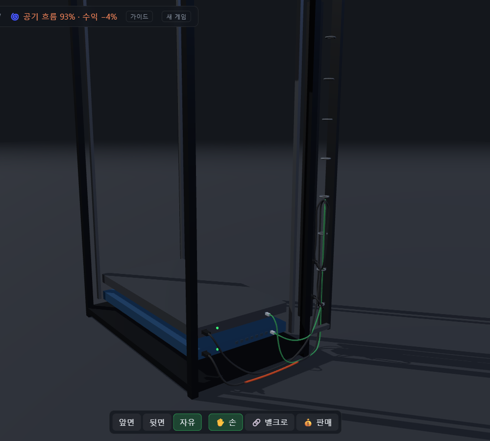

정리 재미가 경제에 연결됨. 장비를 늘릴수록 선이 엉키고, 엉킨 랙은 수익이 줄어드는 구조라 정리가 매번 다시 필요한 행동이 됨. 이 연결이 세 번째 디자인 기둥.
ADR-02
케이블은 완전 3D 물리로, 가장 먼저 검증
내 결정 · 10.24
맥락
장비 앞면은 전원 버튼, 포트는 뒷면. 랙 뒤로 돌아가 배선하는 경험에는 랙 정면 평면만 쓰던 기존 2.5D 물리로는 부족.
결정
완전 3D 케이블 물리. 가장 큰 리스크라 첫 마일스톤에서 프로토타입부터.
실패하면 “케이블 작업만 평면, 화면은 3D”로 돌아가는 대안까지 미리 정해 둠.
버린 대안
평면 배선 + 3D 화면. 범용 물리 엔진(케이블 전용 조건이 많아 자체 Verlet가 단순하다는 에이전트 판단).
결과
첫날 프로토타입 통과. 대안 경로는 쓰지 않음. 카메라를 랙 뒤로 돌려 작업하는 것 자체가 게임의 정체성이 됨.
ADR-03
켜 둔 동안만 번다, 대신 백그라운드 탭도 켜 둔 것
내 결정 · 10.24
맥락
방치형의 기본 질문. 창을 닫은 동안에도 벌게 할지, 다른 탭을 보는 동안은 어떻게 칠지.
결정
오프라인 수익 없음. 대신 페이지가 열려 있으면 탭이 숨겨져 있어도 실제 시간 기준으로 수익.
이유
“켜 두면 쌓인다”는 감각은 유지하면서, 다른 일을 하며 켜 두는 웹 방치형의 장점은 살림. 브라우저가 숨긴 탭의 프레임을 멈추므로 수익은 프레임 수가 아니라 시각 차이로 계산.
결과
배선 · 정리처럼 손이 가는 일은 켜 둔 동안에만 의미가 생겨, 방치와 손 작업이 한 세션 안에서 번갈아 나오는 리듬.
ADR-04
해금은 없애고, 돈 상승은 보수적으로
내 요청 · 10.25
맥락
초안은 “웹 서버 3대 → 스토리지 해금”식 단계 해금과 가격 ×1.15 성장. MVP는 핵심 루프만이라는 방향.
결정
처음부터 전부 구매 가능. 상점이 막히는 이유는 돈과 자리 부족뿐.
대신 인플레이션을 막으려 가격 성장 ×1.25, 상위 서버일수록 본전 회수 시간을 길게.
버린 대안
GDD 해금 조건 유지.
결과
“다음에 뭘 살지”가 해금 순서가 아니라 회수 시간 비교의 문제로 전환. 이후 가격 수치는 요청 없이 건드리지 않도록 에이전트 규칙으로 고정.
장비
가격
수익/초
본전 회수
엔트리 서버 1U
60원
1
60초
웹 서버 1U
400원
3
133초
스토리지 서버 2U
2,500원
10
250초
GPU 서버 4U
2.00만원
55
364초
ADR-05
시작 돈 300원, 서버 한 대는 이미 가동
플레이 피드백 · 10.25
맥락
시작 상태는 스위치 1대 + 엔트리 서버 1대가 이미 돌고 있는 랙(내 제안). 첫 실플레이에서 “0원부터 시작하니까 초반에 할 게 없다”.
결정
기본금 100~400원 선을 요청, 에이전트가 그 안에서 300원을 제안해 채택.
엔트리 서버(60원)와 케이블 세트(25원)는 여러 번 살 수 있고, 웹 서버(400원)는 조금 모아야 하는 값.
결과
켜자마자 사서 끼우고 꽂아 보는 첫 설치가 가능. 동시에 다음 목표(웹 서버)가 바로 보이는 출발점.
ADR-06
정리 점수는 “배기 통로를 막은 케이블 길이”
추천 채택 + 내 결정 · 10.24–25
맥락
3D에서 “잘 정리했다”를 숫자로 만드는 기준이 필요. 이전 퍼즐의 교차 판정은 3D에서 직관적이지 않음.
결정
기준은 공기 흐름(추천 채택). 랙 뒷면 10cm 뒤부터 60cm까지를 배기 통로로 보고, 그 안을 지나는 꽂힌 케이블 길이로 점수.
시작 상태 감점은 “정리 후 회복이 잘 보이게” 4m 기준 유지(내 결정).
버린 대안
장비 배기구 바로 앞 상자로 재기. 측정해 보니 선을 뒷면에 붙여 정리할수록 오히려 감점. 단계형 배율, 랙 온도 °C 표시(연속 %를 선택).
결과
시작 랙 공기 흐름 23%, 수익 −39%. 막힌 토막은 주황빛으로 깜빡여 어디를 정리할지 바로 보임. 사 놓고 아직 안 꽂은 선은 세지 않아 사자마자 감점되는 일 없음.
공기 흐름 = 1 − L / 4m // L = 배기 통로를 지나는 꽂힌 케이블 길이 수익 배율 = 1 − 0.5 × (1 − 공기 흐름) // 최악 −50%

정리 전. 공기 흐름 23% · 수익 −39%.

세로 케이블 매니저로 정리 후. 93% · −4%.
ADR-07
케이블은 2m 고정, 남는 선이 곧 정리 대상
내 결정 · 변경 2회
맥락
추천안은 “길이를 골라 구매”. 그러면 처음부터 딱 맞는 선을 사서 정리할 거리가 사라짐.
결정
1차: 기본 2m + 꽂은 뒤 줄이는 도구(추천 대신 내 결정). 2차: 줄이기 도구도 제거, 2m 고정. 남는 길이는 벨크로 · 매니저로만 정리.
케이블은 장비와 따로 상점에서 구매(랜선 10원, 전원선 15원).
버린 대안
길이 골라 구매. 남는 선 말아 두기(제안 단계에서 “줄이기와 효과가 같다”며 기각).
결과
정리 수단이 벨크로 · 매니저로 좁혀져, 남는 길이를 “어디에 어떻게 걸어 둘까”가 정리의 핵심이 됨.
ADR-08
벨크로는 자동에서 손으로
플레이 피드백 · 10.25
맥락
첫 벨크로는 클릭 한 번에 케이블을 기둥의 닿는 가장 높은 곳으로 자동으로 끌어올려 묶는 방식. 효과는 확실했지만 피드백은
“너무 자동이라 직접 하는 맛이 없다. 선 정리하는 맛이 있어야 함”.
결정
한 손으로 대고 다른 손으로 감기. 케이블 가운데를 끌어 뒷면 기둥에 대면 감길 자리가 미리 보이고, 든 채로 Space(또는 오른쪽 클릭)를 눌러 띠 감기.
한 띠에 여러 가닥을 묶어 다발 가능. 무료 · 무제한.
버린 대안
기둥 몇 U마다 고정 고리, 끌어서 놓으면 자동으로 묶기, 케이블끼리 묶기(통로 안 길이가 그대로라 점수 효과 없음).
결과
세로 기둥이라 그냥 놓으면 미끄러져 내려 “걸쳐 놓고 나중에 클릭”은 불가. 정리가 매번 손으로 대고 감는 동작이 됨. 이후 매니저 고리도 같은 손을 그대로 사용.
ADR-09
케이블 매니저: 높이가 효과를 가른다
추천 채택 + 내 결정 · 10.26
맥락
벨크로는 랙 양 끝 기둥에만 고정점을 만듦. 랙 가운데에 원하는 높이로 선을 걸 자리가 필요.
결정
1U 가로 케이블 매니저를 상점에서 사서 랙 칸에 끼우고, 뒷면 고리 5개에 벨크로와 같은 손으로 걸기(설계 질문 3개 모두 추천안 선택).
가격은 100원, ×1.25 성장으로 내가 확정. 남는 선을 둘 자리는 레퍼런스 사진(옆 덕트를 따라 오르내리는 다발)을 내가 제시해 세로 매니저로 추가.
버린 대안
처음부터 무료로 지급, 놓으면 자동으로 걸림. 둘 다 “직접 하는 맛”(ADR-08)과 충돌.
결과
같은 세 가닥을 걸어도 매니저 높이에 따라 회복 폭이 크게 달라짐. 남는 길이가 고리 아래로 늘어져야 바닥에 안 깔리기 때문.
“어디에 달까”가 새 결정거리가 됨. 세로 매니저는 위로 올렸다가 아래 고리로 다시 내려 걸면 거의 100%까지 회복.
ADR-10
왼손은 케이블 전용, 결과는 뒷면에서 바로
플레이 피드백 · 10.25–26
맥락
첫 실플레이에서 나온 조작 피드백. 회전은 가운데 버튼으로 옮기고 클릭 회전은 빼 달라는 요청, 그리고 뒷면에서 선을 꽂은 뒤 돌아가는지 몰라 “멀뚱멀뚱” 있게 된다는 지적.
결정
카메라 회전은 가운데 버튼, 왼쪽은 잡기 · 클릭 전용. 상태등을 뒷면에도 달고 “꺼져 있지만 배선 완료(파랑)” 상태 추가.
꽂힌 커넥터는 직접 잡고 끌어야만 뽑힘. 산 케이블은 한쪽 끝을 든 채로 시작. 장비 몸체를 끌어 다른 칸으로 옮기기(닿는 케이블은 꽂힌 채).
버린 대안
왼쪽 드래그 회전 유지. 케이블 가운데를 당기면 반대쪽이 뽑히는 기존 방식.
결과
왼쪽 버튼은 손 작업만 담당. 뒷면에서 꽂는 즉시 상태등 색으로 결과를 보고, 파랑이면 앞면으로 돌아가 전원을 켜는 흐름.
ADR-11
만들지 않기로 한 것들
내 결정 · 범위 축소
맥락
MVP는 핵심 루프 한 바퀴만. 정리 도구와 물리는 욕심을 내면 끝이 없는 영역.
결정
케이블끼리 충돌(“이 정도면 충분”), 빗 정리 도구, 줄이기 도구(ADR-07), 단계 해금(ADR-04), 오프라인 수익(ADR-03)은 만들지 않음.
결과
정리 도구는 벨크로 · 가로 매니저 · 세로 매니저 세 가지로 수렴. 모두 “끌어서 대고 Space”라는 같은 손이라 새 도구를 배울 부담 없음.
03 · Iteration
플레이테스트 로그
직접 마우스로 플레이하고 나온 피드백을 원문 그대로 기록. 수치 튜닝은 실플레이 전까지 보류하고, 조작과 손맛부터.
10.25 · 1차 실플레이
시작 돈 300원, 가이드 토글, 가운데 버튼 회전, 올리면 강조, 뒷면 상태등
0원부터 시작하니까 초반에 할 게 없다 / 케이블 연결하고 멀뚱멀뚱 있을 수 있다
피드백 6개를 한 번에 반영. 선끼리 충돌은 “이 정도면 충분”으로 제외. → ADR-05, ADR-10
10.25
벨크로 자동 방식 폐기, 손 배선으로 교체
너무 자동이라서 직접 하는 맛이 없다
같은 날 줄이기 도구 제거, 꽂힌 포트는 직접 잡아야 뽑히게, 판매는 클릭 즉시 · 50% 환급. → ADR-07, ADR-08
10.26
고리 고르기를 화면 각도 기준으로
케이블 고리가 생각보다 끼우기 어렵다
3cm 고정 판정은 2.5m 거리에서 화면 13px 남짓. 시선 각도 0.03rad(약 26px)로 변경.
10.26
든 선만 걸기
같은 지점을 지나는 모든 선이 묶인다
들고 있는 선만 걸리고, 빈손 클릭일 때만 닿은 선 모두.
10.26
고리 사이를 팽팽하게
고리를 통과하는 선이 조금 더 일직선을 유지하면 좋겠다
고리 사이 처짐 2.7cm → 1.3cm. 포트 바로 위 고리에 엉뚱한 마디가 들어가던 문제(“가운데 고리에 계속 포트에 가까운 선이 들어간다”)도 함께 수정.
10.26
장비 끌어 옮기기, 세로 케이블 매니저
서버도 드래그로 위아래로 옮길 수 있으면 / 남은 선 정리는 어떻게 하는 게 좋지?
남는 선 문제는 레퍼런스 사진으로 방향을 정해 세로 매니저로. → ADR-09
04 · AI Workflow
결정은 내가, 구현과 측정은 에이전트가
구현은 에이전트에 맡기고, 기획자로서 결정에 집중. 에이전트(Claude Code)는 설계 질문마다 선택지와 추천안을 내고, 고르는 건 직접. 추천을 뒤집은 결정(ADR-07)과 내가 먼저 꺼낸 방향(ADR-01 · 09)이 게임의 성격을 정함.
29건
GDD 결정 로그 (채택 · 이유 · 결정 주체)
11개
세션 인계 문서 (handoff)
21커밋
구현 약 13시간 (10.25 정오 → 10.26 새벽)
86개
헤드리스 테스트 (Vitest)
장치
하는 일
handoff 문서
세션마다 목표 · 채택/기각과 그 이유 · 결정 주체 · 근거 데이터 · 피드백 원문을 기록. 다음 세션이 앞선 결정을 잊거나 뒤집지 않게.
고정 규칙
“가격 수치는 요청 없이 건드리지 말 것”, “커밋 · 배포는 물어보고”. 에이전트가 알아서 튜닝하지 못하게 경계를 명시.
헤드리스 측정
“매니저를 어디 달면 몇 %?”를 감이 아니라 숫자로. 높이별 공기 흐름, 고리 사이 처짐 같은 수치가 결정 근거.
배포 자동화
main에 push하면 테스트 → 빌드 → GitHub Pages. 결정한 내용을 바로 플레이 가능한 주소에서 확인.
가장 유용했던 장치
결정마다 “누가 정했는지”를 남긴 것. 추천안을 그대로 고른 결정과 내가 뒤집은 결정이 구분돼, 게임이 흔들릴 때 어느 결정으로 돌아가 다시 볼지 바로 보임.
05 · Play
직접 플레이
랙 뒤로 돌아가 선 세 가닥을 정리하는 것만으로 루프 한 바퀴 체험 가능. 데스크톱 Chrome, 가운데 버튼이 있는 마우스 권장.
진행은 브라우저에 자동 저장. 큰 화면은 새 창에서 열기.
조작: 가운데 드래그 회전 · 오른쪽 드래그 이동 · 휠 확대 · 커넥터를 끌어 포트에 놓기 · 케이블을 기둥이나 고리에 대고 Space · 1 손 · 2 벨크로 · 3 판매
06 · Status
아직 개발 중
현재 MVP와 정리 · 발열 단계까지 구현된 상태로, 개발이 계속 진행 중.
이 페이지의 수치와 조작은 지금 빌드 기준이며, 이후 업데이트에 따라 바뀔 수 있음.